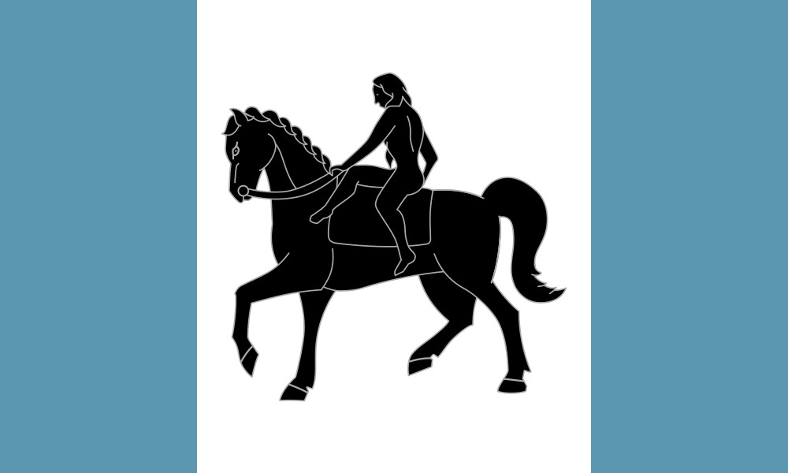

Diliana Thompson
About Me

Hello! I'm a passionate web developer based in Coventry. I love blending creativity with code to build meaningful digital experiences. This city inspires me with its rich history and vibrant energy—and I carry that spirit into everything I create.
Web Dev Resources
Here are some beginner-friendly websites to learn web development:
- freeCodeCamp – Hands-on projects and certifications.
- The Odin Project – Project-based learning path.
- MDN Web Docs – Trusted documentation and tutorials.
- Codecademy – Interactive lessons with guided paths.
- W3Schools – Easy-to-follow tutorials and examples.